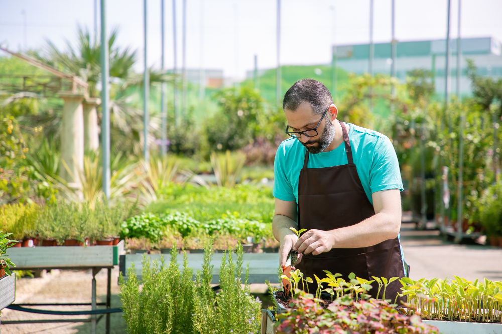
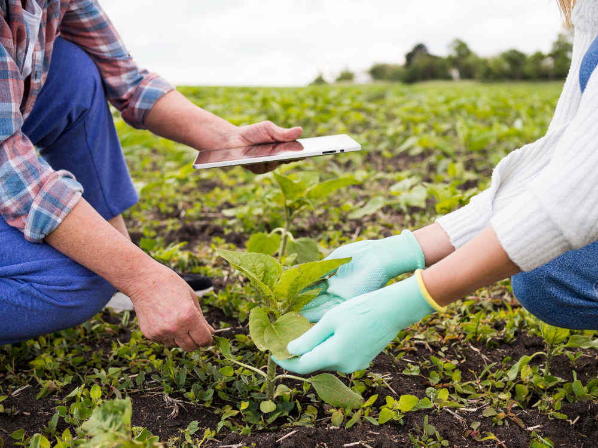
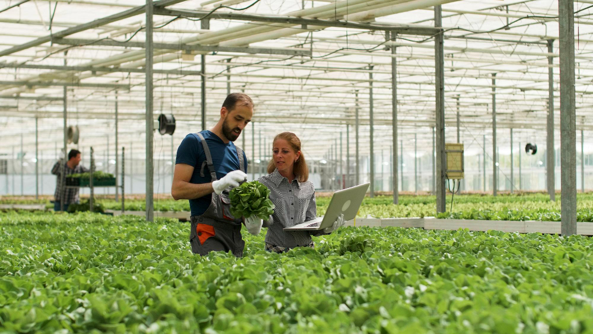
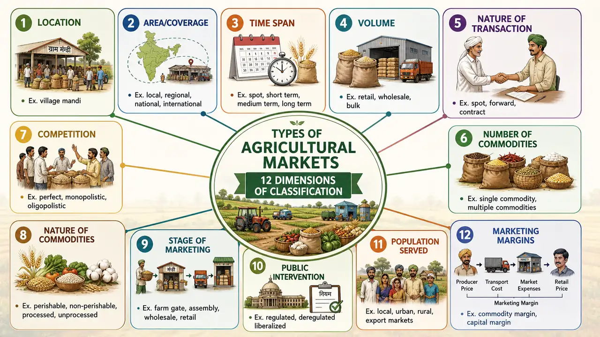
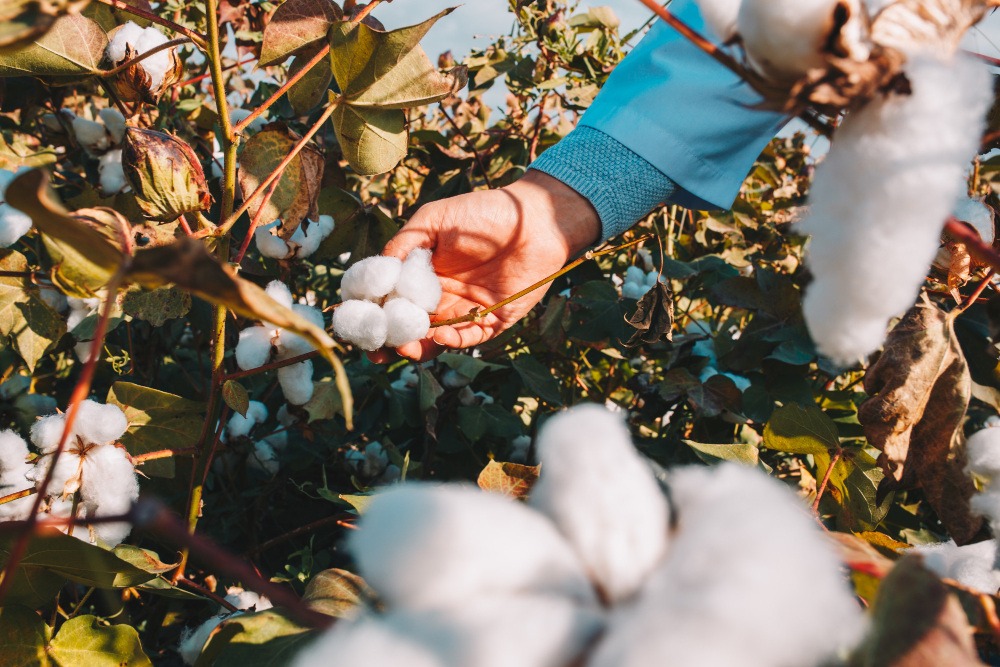
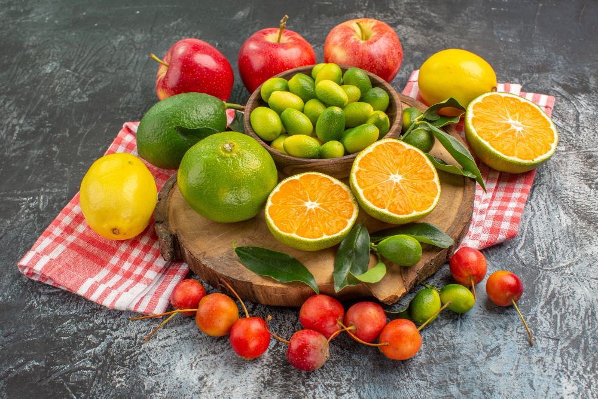
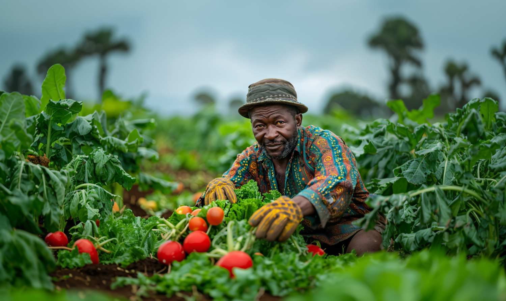

Farming Guides & Tutorials
Explore a variety of guides covering best practices, innovative techniques

Farming Practices
This guide delves into organic farming methods, covering practices like crop rotation, green manure, and composting to promote environmental sustainability.

Agriculture Techniques
Learn about precision agriculture technologies including GPS mapping, soil sensors, and drone monitoring for optimized crop production.

Methodologies
Discover sustainable essential methodologies techniques like drip irrigation and rainwater harvesting to maximize water efficiency.

Categorization of guides.
Agricultural guides can be categorized into several key areas, including crop production (field crops, vegetables, fruits), livestock management (cattle, poultry, aquaculture), sustainable farming practices (organic, regenerative, agroecology), agricultural technology (precision farming, farm management software), soil and water management, post-harvest handling (storage, value-added products), farm business and economics, farm equipment and machinery, climate resilience strategies, and rural development (community farming, youth and women empowerment). These categories help organize vast agricultural knowledge into practical, specialized areas for easier access and application in different farming contexts.
Crop Types
Select a category to view specific farming guides

Grains
Rice, wheat, corn, barley, and cereal cultivation.

Cash Crops
Cotton, sugarcane, tea, coffee, and commercial crops.

Fruits
Citrus, berries, orchards, and tropical fruit crops.

Vegetables
Tomatoes, leafy greens, root vegetables, and herbs.
Seasonal Guides
Plan your sowing and harvesting by agricultural season
Monsoon/Summer sowing crops requiring warm weather and high rainfall.
- Monsoon Season: Jun – Oct
- Key Crops: Rice, Maize, Cotton
Cool-season crops sown in autumn and harvested in spring.
- Winter Season: Oct – Mar
- Key Crops: Wheat, Mustard, Peas
Perennial crops and greenhouse farming adaptable to any season.
- Duration: All Year
- Key Crops: Sugarcane, Banana, Herbs
Farming Methods
Explore techniques from traditional to high-tech farming

Organic Farming
Chemical-free soil enhancement, natural pest control, and composting techniques.

Hydroponics
Soilless water-based nutrient systems for indoor and urban agriculture setup.
Traditional Farming
Time-tested field cultivation, crop rotation, and open-soil agricultural practices.

Greenhouse Farming
Controlled climate systems to maximize yield and protect crops from severe weather.
Detailed Step-by-Step Farming Instructions
Follow this structured process for successful crop growth from start to harvest.
Soil Preparation & Testing
Test soil pH and nutrient levels (NPK) to understand soil health. Clear weeds, plow the soil thoroughly to break up hard earth, and enrich it with organic matter or compost to create an optimal growth foundation.
Pro Tip
Maintain soil pH between 6.0 and 7.0 for most vegetables to maximize nutrient absorption.
Best Practice
Maintain soil pH between 6.0 and 7.0 for most vegetables to maximize nutrient absorption.
Soil Preparation & Testing
Test soil pH and nutrient levels (NPK) to understand soil health. Clear weeds, plow the soil thoroughly to break up hard earth, and enrich it with organic matter or compost to create an optimal growth foundation.
Pro Tip
Maintain soil pH between 6.0 and 7.0 for most vegetables to maximize nutrient absorption.
Best Practice
Maintain soil pH between 6.0 and 7.0 for most vegetables to maximize nutrient absorption.
Soil Preparation & Testing
Test soil pH and nutrient levels (NPK) to understand soil health. Clear weeds, plow the soil thoroughly to break up hard earth, and enrich it with organic matter or compost to create an optimal growth foundation.
Pro Tip
Maintain soil pH between 6.0 and 7.0 for most vegetables to maximize nutrient absorption.
Best Practice
Maintain soil pH between 6.0 and 7.0 for most vegetables to maximize nutrient absorption.